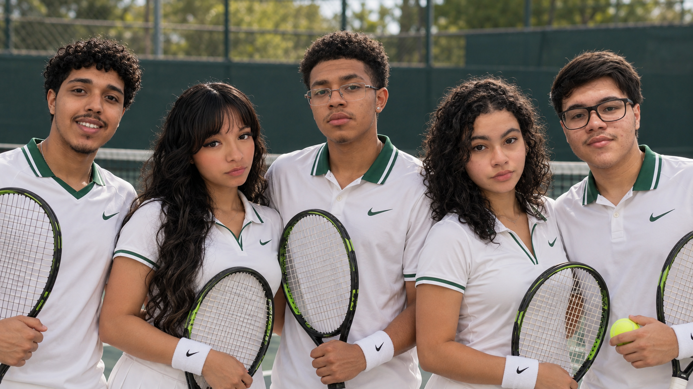

Muitas oportunidades circulam apenas em redes e contatos já estabelecidos.
Isso pode afastar atletas que têm potencial, mas pouco acesso a treinadores, instituições e processos seletivos.

Este é o registro de como cinco estudantes transformaram um problema percebido no esporte em pesquisa, regras, protótipos, código e documentação.
Isso pode afastar atletas que têm potencial, mas pouco acesso a treinadores, instituições e processos seletivos.
Em vez de prometer resolver todo o cenário esportivo, delimitamos uma jornada possível de pesquisar, projetar e demonstrar.
Reunimos requisitos, regras de negócio, identidade visual, 38 telas, protótipo navegável, estrutura web, banco de dados, testes e documentação.

Todos nós participamos de todas as etapas do MatchPoint: pesquisa, planejamento, criação das telas, ligação dos fluxos, desenvolvimento das funcionalidades, testes e documentação. Os cartões abaixo mostram apenas os pontos em que cada integrante teve maior participação, mas o projeto inteiro foi construído pelos cinco.
Participou de todas as etapas do projeto e teve maior atuação na estrutura dos dados e nas funcionalidades internas que conectam os diferentes perfis do sistema.
Participou de todas as etapas do projeto, desenvolveu funcionalidades e teve maior atuação na criação e ligação das telas, na experiência visual e na apresentação do trabalho.
Participou de todas as etapas do projeto e teve maior atuação no planejamento técnico, na organização das atividades e na estrutura que sustentou o desenvolvimento.
Participou de todas as etapas do projeto, desenvolveu funcionalidades e teve maior atuação nas pesquisas, na comunicação visual e nas interfaces de acesso e da instituição.
Participou de todas as etapas do projeto, desenvolveu funcionalidades e teve maior atuação na definição do conceito, das regras de negócio e da arquitetura de navegação.
Atletas, treinadores e instituições ainda dependem de redes sociais, indicações e contatos pessoais para encontrar e divulgar oportunidades.
O MatchPoint reúne perfis, oportunidades, candidaturas, avaliações e registros de apoio em um único fluxo.
Perfis confiáveis, oportunidades bem descritas e acompanhamento claro de cada candidatura.
Constrói o perfil esportivo, encontra oportunidades e acompanha candidaturas.
Administra as ações do atleta menor diretamente pela conta vinculada.
Publica oportunidades técnicas e registra avaliações solicitadas.
Oferece apoio, analisa candidatos, decide e registra o impacto.
Verifica cadastros, modera o sistema e audita regras e cálculos.
Estudamos o público e soluções semelhantes para delimitar um problema que coubesse no projeto.
Registramos objetivos, perfis, critérios, responsabilidades, restrições e requisitos funcionais e não funcionais.
Modelamos entidades no DER e conectamos fluxos de atleta, responsável, treinador, instituição e administrador.
Criamos a marca, o sistema visual, os componentes e um protótipo navegável com estados e mensagens.
Construímos a estrutura web responsiva e as interações, integrando regras, perfis e dados de teste.
Testamos fluxos e responsividade, corrigimos inconsistências e consolidamos decisões no Word e nos slides.
Agradecemos de coração à professora Juliana e ao professor Washington por esses dois anos maravilhosos, repletos de aprendizados, experiências e momentos que fizeram parte da nossa trajetória.
Obrigado por toda a paciência, dedicação, orientação e por acreditarem em nós durante esse caminho. Cada conselho, ensinamento e incentivo contribuiu não só para este projeto, mas também para o nosso crescimento pessoal e profissional.
Foi muito especial poder contar com vocês nessa etapa tão importante das nossas vidas. Levaremos conosco tudo o que aprendemos e, principalmente, a gratidão por terem feito parte dessa história.
O documento desenvolvido pela equipe reúne a justificativa do tema, objetivos, pesquisas, requisitos, regras de negócio, arquitetura, banco de dados, telas e fluxos. É o registro mais completo de como pensamos e construímos o MatchPoint.
Ver PDF do TCC